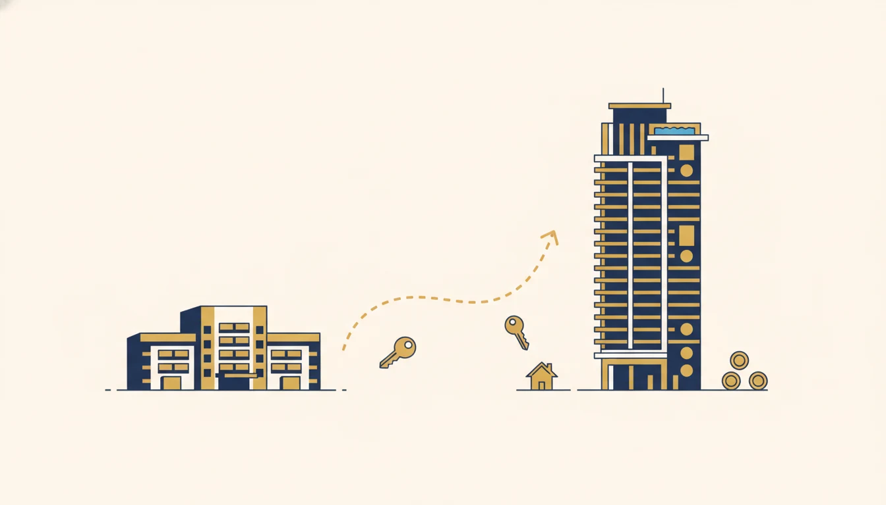
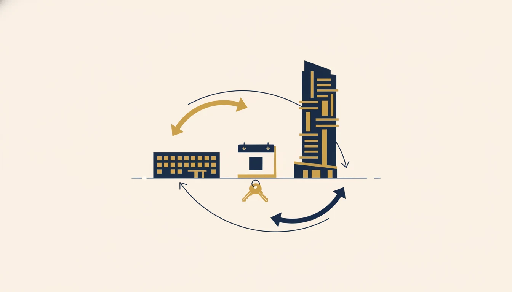
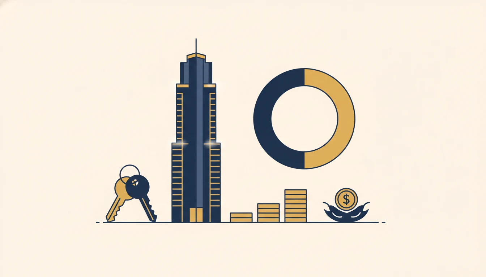

Upgrading From HDB to Condo in Singapore (2026): A Real Case Study

When you upgrade from HDB to a condo, the order you buy and sell decides your ABSD. Sell the HDB first and the condo is your only property, so a Singapore Citizen pays 0% ABSD. Buy first and you front the 20% second-property ABSD in cash, then claim a refund only if you sell within 6 months. One couple I worked with sold first, paid $0 ABSD instead of fronting ~$418,000, and used a 2-week bridging loan (cost: a few hundred dollars) to cover the timing gap on their $2.09M condo.
The Two Routes: Sell First vs Buy First
An HDB-to-condo upgrade has one decision that matters far more than the rest. Do you sell the flat before or after you buy the condo? This is not a question of preference. It sets whether you pay Additional Buyer's Stamp Duty (ABSD) at all, and how much cash you have to find on day one.
| Factor | Sell HDB first | Buy condo first |
|---|---|---|
| ABSD on the condo (SC) | 0% (only property) | 20% upfront, refundable later |
| Cash needed day one | Downpayment only | Downpayment plus 20% ABSD |
| Refund / deadline risk | None | Must sell HDB within 6 months to reclaim ABSD |
| Main challenge | Timing gap (where to live, downpayment timing) | Funding + the 6-month clock |
| Usual fix | Bridging loan | Strong cash buffer |
For a Singapore Citizen couple, the second-property ABSD is 20% in 2026. On a $2.09M condo that comes to $418,000, payable in cash within 14 days of the purchase. The married-couple ABSD remission can refund it, but only if you sell the first matrimonial home within 6 months. Sell first and the whole problem disappears.
The Real Case: 4-Room HDB to a $2.09M Condo
A married couple, both Singapore Citizens, owned a 93 sqm 4-room HDB flat that had cleared its Minimum Occupation Period. They were ready to move up to a 3-bedroom condominium (969 sqft, $2,090,000). The flat still carried a $120,000 loan.

The upgrade decision in one image: the order you sell and buy decides your ABSD and your day-one cash.
When they came to me, their instinct was to secure the condo first so they wouldn't “miss it.” But fronting $418,000 in ABSD, even with a later refund, was neither necessary nor comfortable. So we ran the other route. They would sell the HDB first, the condo would then be a first property at 0% ABSD, and we would bridge the short gap between completing the sale and paying the condo downpayment. They sold the flat in 2024 for $668,000.
The Numbers: Proceeds, Loan, BSD, $0 ABSD
Here is how the money moved.
| Item | Amount |
|---|---|
| HDB sold (2024) | $668,000 |
| — less outstanding HDB loan redeemed | $120,000 |
| — less CPF refund (principal + accrued interest) | $190,000 |
| Cash proceeds in hand | ~$358,000 |
| CPF returned to Ordinary Account (re-usable) | $190,000 |
| Condo purchase | $2,090,000 |
| New loan at 75% LTV | ~$1,567,500 |
| Downpayment (25%) | ~$522,500 |
| Buyer's Stamp Duty (approx.) | ~$74,100 |
| ABSD paid | $0 |
The $190,000 of CPF that came back into the Ordinary Account, plus the ~$358,000 cash, funded the downpayment and stamp duty on the condo. Because the flat was sold first, the only stamp duty on the purchase was Buyer's Stamp Duty (~$74,100). No ABSD at all.
Why Selling First Avoided Fronting $418,000
Had they bought the condo while still holding the HDB, the condo would have been a second property. For a Singapore Citizen that is 20% ABSD = $418,000, due in cash within 14 days. They could have claimed the married-couple remission afterwards, but only by selling the HDB within 6 months. That route has two real problems.
- Cash flow is the first. Very few upgraders can park $418,000 for months waiting on a refund, on top of the downpayment.
- Then there is the deadline. If the flat doesn't sell within 6 months, the refund is lost, and you don't control the buyer's timeline.
Selling first removed both. No ABSD to front, no refund to chase, no clock running. The only thing left to solve was timing, and that is a much smaller, cheaper problem.
Bridging the Timing Gap

The new home, financed at 75% LTV, with the HDB sale proceeds and CPF redeployed into the downpayment.
The catch with selling first is the sequencing. The condo downpayment can fall due before the HDB sale proceeds actually land. That gap is exactly what a bridging loan is for. It is a short-term loan that advances your expected sale proceeds so you can complete the purchase, then is repaid the moment the sale money arrives.
Bridging rates run around 3–4% per annum, but you are charged only for the days you actually use it. Here the bridge was needed for just two weeks, so the interest came to a few hundred dollars. Set that against the $418,000 ABSD the sequencing avoided and it is a rounding error. We also used an HDB completion extension to line up the sale and purchase dates as closely as possible, which kept the bridge short.
Financing the Condo: LTV, TDSR, CPF
The condo loan is a standard first housing loan, just on a much larger quantum than the flat. Three checks matter.
- LTV is capped at 75%, the maximum first-loan ratio, which caps the loan at ~$1,567,500 on the $2.09M price. The 25% downpayment needs at least 5% in cash, and the rest can be cash or CPF. See choosing a condo loan.
- TDSR has to clear 55%, stressed at 4%. The bigger instalment must still sit within 55% of gross income at the MAS 4% stress floor, not today's rate. We confirmed the couple cleared it before committing. This is the most important check in any upgrade. Background: TDSR explained.
- CPF came back into play here. The $190,000 refunded to the Ordinary Account (principal plus 2.5% accrued interest) was redeployed into the condo. How CPF funds a purchase: CPF OA guide.
They took a fixed-rate package at just over 2%, which was sensible in 2024, when rates were higher. With 2026 fixed rates now from around 1.40%, that loan is a prime refinancing candidate once its lock-in ends. The upgrade is rarely the last decision. It is just the first. The full step-by-step for the new loan is in our home loan application guide.
Sell-First vs Buy-First: Which Is Right for You
Sell first if
- You cannot, or would rather not, front the 20% ABSD in cash.
- You want certainty, with no refund to chase and no 6-month clock.
- You're comfortable with a short bridge and possibly a brief interim stay.
Buy first if
- You must lock down a specific unit now, such as a launch, and can't wait to sell.
- You have the cash to front the ABSD and ride out the refund.
- You're confident the HDB will sell well within 6 months.
For most upgraders, sell-first wins on both cash flow and risk. Buy-first is the right call in a specific situation, not the default. Either way, model it before you sign anything. The wrong sequence can cost six figures.
Related: not sure a condo is the right step up? Compare it against the premium-HDB route in our look at million-dollar HDB flats and the HDB-vs-EC-vs-condo decision.
Mistakes to Avoid
- Don't buy first without the ABSD cash. The 20% is due in 14 days, refund or not, and you can't assume the HDB sells in time.
- Don't skip stress-testing the bigger loan. A condo instalment at the 4% floor is far larger than an HDB one, so check TDSR before you fall for a unit.
- Don't forget the CPF refund. Your sale proceeds shrink by the CPF principal and the accrued interest returned to your OA, so plan around the actual cash you'll hold.
- Don't ignore the timing gap. Coordinate the HDB completion and condo downpayment dates, and line up a bridging loan early if they don't meet.
- Don't over-stretch the tenure. Pushing the loan past age 65 or 30 years drops your LTV to 55%, which means more cash down, not less.
Frequently Asked Questions
For most upgraders, sell first. Once you no longer own the flat, the condo is a first property and a Singapore Citizen pays 0% ABSD; a bridging loan covers the timing gap. Buy-first means fronting the 20% ABSD in cash and reclaiming it only if you sell within 6 months — suited to those securing a specific unit who can fund both.
If you sell the HDB before buying, the condo is your only property and a Singapore Citizen pays 0% ABSD. If you buy while still owning the HDB, it's a second property at 20% ABSD (2026), payable in 14 days, refundable under the married-couple remission only if you sell the flat within 6 months.
A short-term loan that advances your expected HDB sale proceeds so you can pay the condo downpayment before the sale completes, repaid once proceeds arrive. Rates are ~3–4% p.a. but charged only for the days used — a two-week bridge costs a few hundred dollars. It's the standard fix for sell-first upgraders.
Up to 75% LTV on a first housing loan, subject to TDSR (55% of gross income, stressed at 4%) and a tenure within the LTV cap. On a $2.09M condo that's about $1,567,500, with a ~$522,500 downpayment (at least 5% cash, the rest cash or CPF).
The CPF OA you used, plus 2.5% p.a. accrued interest, is refunded to your OA on completion — here about $190,000 — and can then be used for the condo downpayment and stamp duty.
After your MOP you may keep the flat and buy private, but the condo then counts as a second property and ABSD applies (20% for a Singapore Citizen). Many upgraders sell to avoid the ABSD and free up cash and CPF for the condo.
Planning Your HDB Upgrade? Get the Sequencing Right.
Nexus Mortgage SG models your upgrade end to end — sell-first vs buy-first, the ABSD math, your TDSR on the new loan, the bridging loan, and the CPF and cash flow — then compares all 16 banks for your condo loan. Independent, and at no cost to you.
Start My Free Report →Upgrading soon? WhatsApp Dan Ler at +65 8752 0859 for a free upgrade plan and 16-bank rate comparison. Banks pay our fee — you pay nothing.
Check your numbers first: affordability calculator · current rates.

About the author — Dan Ler has advised on Singapore home loans since 2017 at Nexus Mortgage SG, an independent brokerage comparing 16+ MAS-regulated lenders. The upgrade in this article is a real client he advised — HDB sold first, condo bought at 0% ABSD, the timing gap bridged for two weeks. Banks pay Nexus on disbursement, so there is no cost to the borrower.
Nexus Mortgage SG is an independent Singapore mortgage advisory. This article is general information, not financial, tax or legal advice, and client figures are rounded and anonymised. ABSD, BSD, LTV, TDSR, CPF and HDB resale rules are governed by IRAS, MAS, HDB and CPF policy; figures reflect positions as of 6 June 2026 and can change. Always confirm your specific eligibility with an independent mortgage advisor, and ABSD remission with IRAS, before acting. Sources: IRAS ABSD, HDB: Selling Your Flat, CPF: Using Your CPF to Buy a Home, MAS TDSR.